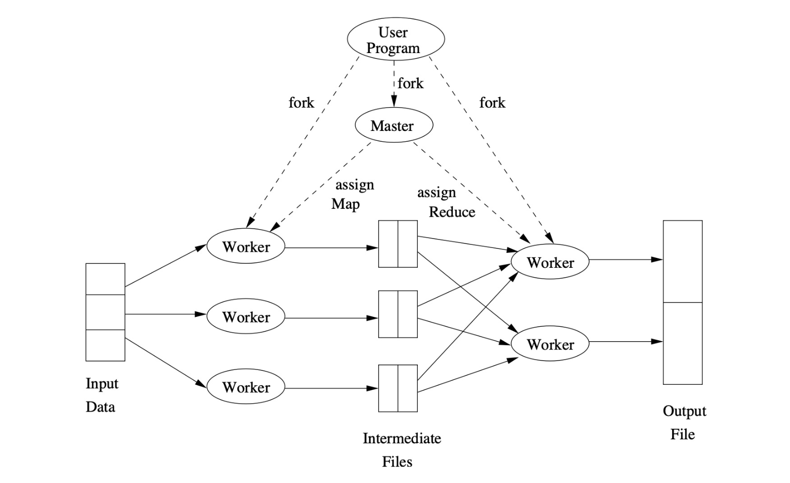
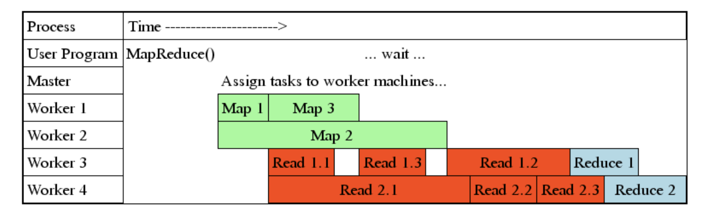
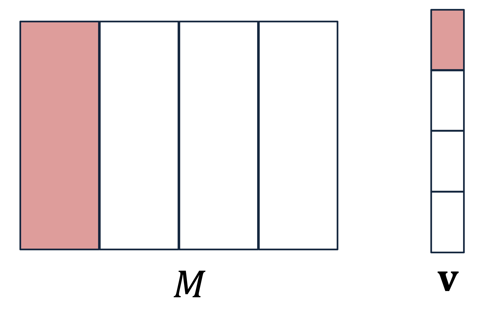

1. Introduction
- [Part 1]에서는 분산 시스템의 인프라를, [Part 2]에서는 프로그래밍 모델(Map & Reduce)을 다루었습니다.
- 이번 마지막 포스트에서는 MapReduce가 실제 클러스터에서 어떻게 실행(Execution)되고, 수천 대의 노드 중 일부가 고장 났을 때 어떻게 복구(Fault Tolerance)하는지, 그리고 구글의 핵심 알고리즘인 PageRank(Matrix-Vector Multiplication)가 이 위에서 어떻게 돌아가는지 상세히 살펴봅니다.
2. MapReduce Execution Workflow
- 사용자가 MapReduce 코드를 실행하면 내부적으로 어떤 일이 벌어질까요? 전체 프로세스는 Master-Worker 구조로 돌아갑니다.

2.1. Roles of Processes
- Master Controller
- Scheduler: 전체 시스템의 지휘자입니다. Map과 Reduce 태스크를 유휴 상태(Idle)인 Worker들에게 할당합니다.
- Monitor: 각 태스크의 상태(Idle, Executing, Completed)를 추적합니다.
- Coordinator: Map 태스크가 어디서 끝났고, 그 결과 파일이 어디에 있는지 Reduce 태스크에게 알려줍니다.
- Workers
- 실제 연산을 수행하는 프로세스입니다.
- 한 Worker는 시점에 따라 Map 태스크를 맡을 수도, Reduce 태스크를 맡을 수도 있습니다 (동시에는 안 함).
- 작업이 끝나면 Master에게 “완료 보고”를 합니다.
2.2. Data Flow & Pipelining
MapReduce는 모든 Map이 다 끝날 때까지 멍하니 기다리지 않습니다. Pipelining을 통해 효율을 극대화합니다.
Map Task Output: Map Worker의 로컬 디스크(Local Disk)에 중간 파일(Intermediate Files)로 저장됩니다.
Reduce Task Input: Reduce Worker는 Map 작업이 하나라도 끝나면 즉시 데이터를 읽어오기 시작(Copying/Shuffling)합니다.
Execution: 단, 실제
Reduce()함수 실행은 필요한 모든 파티션의 데이터를 다 가져온 후에 시작됩니다.

3. Coping with Node Failures
- 수천 대의 머신에서 장애는 일상입니다. MapReduce의 가장 강력한 기능은 사용자 개입 없이 시스템이 알아서 장애를 복구한다는 점입니다.
3.1. Master Failure
- 증상: 지휘자가 사라졌으므로 상태 관리가 불가능합니다.
- 대응: 현재로서는 작업 전체를 재시작(Restart entire job)하는 수밖에 없습니다. 하지만 Master는 단 한 대뿐이므로 확률적으로 매우 드뭅니다.
3.2. Map Worker Failure
- 상황: Map 태스크를 수행하던 노드가 죽었습니다.
- 대응:
- 진행 중(In-progress)인 작업: 당연히 다른 Worker에게 재할당하여 다시 실행합니다.
- 완료된(Completed) 작업: 이 경우에도 다시 실행해야 합니다!
- Why?: Map의 결과물은 HDFS(글로벌)가 아니라 해당 노드의 로컬 디스크에 저장되기 때문입니다. 노드가 죽으면 그 로컬 파일도 접근 불가능해지므로, 다시 계산해야 합니다.
3.3. Reduce Worker Failure
- 상황: Reduce 태스크를 수행하던 노드가 죽었습니다.
- 대응:
- 진행 중인 작업: 다른 Worker에게 재할당하여 다시 실행합니다.
- 완료된 작업: 다시 실행할 필요가 없습니다.
- Why?: Reduce의 최종 결과물은 DFS(Distributed File System)에 저장되어 3중 복제(Replication)되므로, 노드가 죽어도 데이터는 안전합니다.
4. Tuning: Number of Reduce Tasks
MapReduce 성능 최적화의 핵심 파라미터 중 하나는 “Reduce Task의 개수(\(R\))”를 몇 개로 설정할 것인가입니다.
이상적인 경우: \(R\)을 Key의 개수만큼 늘리면 병렬성이 극대화될 것 같지만, 오버헤드가 너무 큽니다.
현실적인 문제:
- Key의 개수는 수십억 개에 달할 수 있습니다.
- Key마다 데이터 양의 편차(Skew)가 큽니다 (예: ‘the’ 단어 vs 희귀 단어).
Rule of Thumb: \[\# of Nodes < \# of Reduce Tasks < \# of Keys\]
- 보통 노드 수보다 조금 더 많게 설정하여, 한 태스크가 빨리 끝나면 바로 다음 태스크를 가져와 로드 밸런싱이 되도록 합니다.
5. Algorithm: Matrix-Vector Multiplication
- MapReduce는 원래 구글의 PageRank 계산을 위해 탄생했습니다. PageRank의 핵심 연산은 거대한 인접 행렬 \(M\)과 중요도 벡터 \(v\)의 곱셈입니다. \[x = Mv \quad \Rightarrow \quad x_i = \sum_{j=1}^{n} m_{ij} v_j\]
- 여기서 \(n\)은 웹 페이지의 개수로, 수백억(Tens of billions) 단위입니다.
5.1. Case 1: Vector \(v\) fits in Main Memory
행렬 \(M\)은 너무 커서 디스크에 있지만, 벡터 \(v\)는 메모리에 들어갈 정도로 작다고 가정해 봅시다.
Map Function:
- 입력: \(((i, j), m_{ij})\) (행렬의 원소 하나)
- 동작: 메모리에 있는 전역 벡터 \(v\)에서 \(v_j\)를 읽어와 곱합니다.
- 출력: Key=\(i\), Value=\(m_{ij} v_j\)
Reduce Function:
- 입력: Key=\(i\), Values=\([m_{i1}v_{1}, m_{i2}v_{2}, ...]\)
- 동작: 리스트의 값을 모두 더합니다. (\(\sum_j m_{ij} v_j\))
- 출력: \((i, x_i)\)
5.2. Case 2: Vector \(v\) is too large (Stripes Method)
- 벡터 \(v\)조차 너무 커서 메모리에 다 올릴 수 없다면 어떻게 할까요? Stripe(띠) 방식으로 쪼개서 처리해야 합니다.

- Divide: 행렬 \(M\)을 세로 띠(Vertical Stripes)로 나누고, 벡터 \(v\)를 가로 띠(Horizontal Stripes)로 나눕니다.
- Constraint: 한 번에 처리할 벡터의 띠 하나가 메모리에 들어갈 수 있도록 크기를 조절합니다.
- Process: 각 Map Worker는 행렬의 특정 띠 부분과 벡터의 대응되는 띠 부분만 로드하여 부분 곱(Partial Product)을 계산합니다.
- Result: 이후 Reduce 단계에서 부분 합들을 모아 최종 결과를 만듭니다.